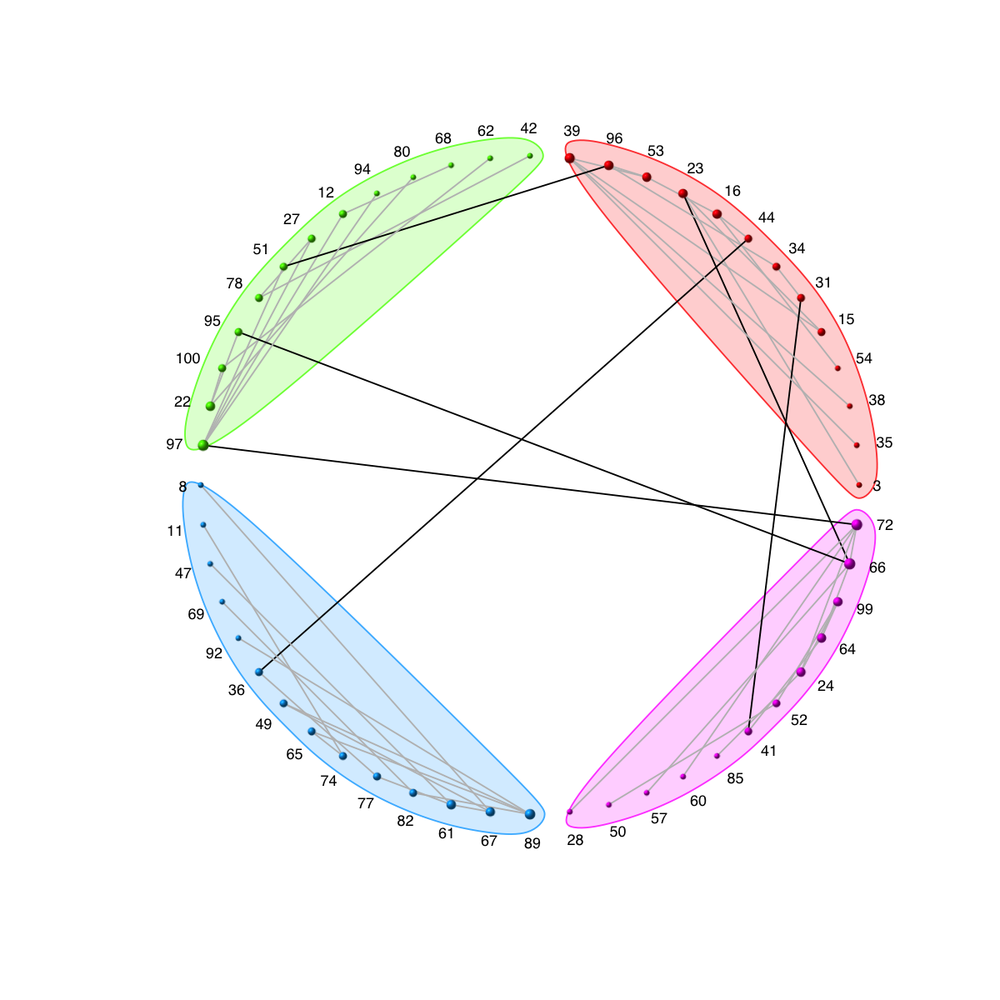
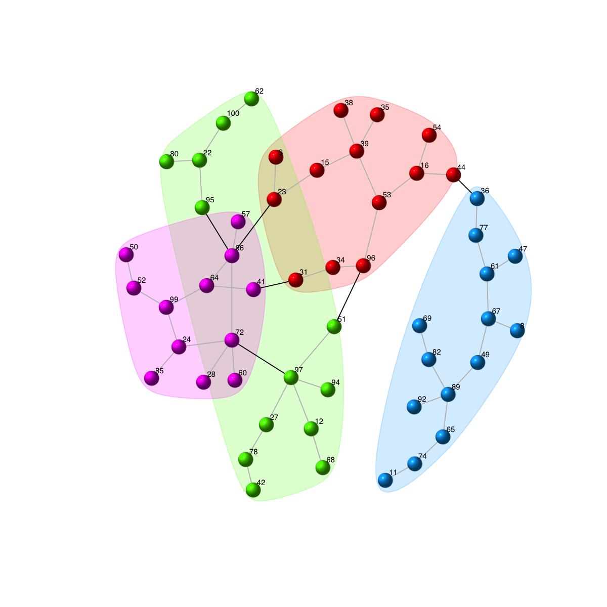

Description
visGraphCircle is supposed to visualise a graph
object of class "igraph" via circle diagram. For better
visualisation, ordering of vertices is determined
according to communities and degrees.
Usage
visGraphCircle(g, com, circles = c("single", "multiple"), newpage = T, ordering = NULL,
colormap = c("rainbow", "bwr", "jet", "gbr", "wyr", "br", "yr", "wb"), vertex.label = V(g)$name,
vertex.size = log(igraph::degree(g)) + 2, vertex.label.color = "black", vertex.label.cex = 0.6,
vertex.label.dist = 0.75, vertex.shape = "sphere", edge.width = 1, edge.lty = 1,
edge.color.within = "grey", edge.color.crossing = "black", mark.shape = 1, mark.expand = 10,
...)
Arguments
- g
- an object of class "igraph"
- com
- an object of class "communities" (see
http://igraph.sourceforge.net/doc/R/communities.html)
- circles
- how circles are drawn in the plot. It can
be either "single" for all communities being drawn in a
single circle (by default) or "multiple" for communities
being drawn in the different circles (i.e. one circle per
community)
- newpage
- logical to indicate whether to open a new
page. By default, it sets to true for opening a new page
- ordering
- a numeric vector about the ordering of
vertices. It is optional. It is highly recommend to order
vertices according to communities and degrees
- colormap
- short name for the colormap. It can be
one of "jet" (jet colormap), "bwr" (blue-white-red
colormap), "gbr" (green-black-red colormap), "wyr"
(white-yellow-red colormap), "br" (black-red colormap),
"yr" (yellow-red colormap), "wb" (white-black colormap),
and "rainbow" (rainbow colormap, that is,
red-yellow-green-cyan-blue-magenta). Alternatively, any
hyphen-separated HTML color names, e.g.
"blue-black-yellow", "royalblue-white-sandybrown",
"darkgreen-white-darkviolet". A list of standard color
names can be found in
http://html-color-codes.info/color-names
- vertex.label
- the label of the vertices. The
default vertex labels are the name attribute of the
nodes
- vertex.size
- the size of each vertex. By default,
it is decided according to node degrees
- vertex.label.color
- the color of vertex labels
- vertex.label.cex
- the font size of vertex labels
- vertex.label.dist
- the distance of the label from
the center of the vertex. If it is 0 then the label is
centered on the vertex. If it is 1 then the label is
displayed beside the vertex.
- vertex.shape
- the shape of each vertex. It can be
one of "circle", "square", "csquare", "rectangle",
"crectangle", "vrectangle", "pie"
(http://igraph.sourceforge.net/doc/R/vertex.shape.pie.html),
"sphere", and "none". If it sets to NULL, these vertices
with negative will be "csquare" and the rest "circle".
- edge.width
- line width for the edges (default 1)
- edge.lty
- line type for the edges (default 1)
- edge.color.within
- the color for edges within a
community (default "grey")
- edge.color.crossing
- the color for edges between
communities (default "black")
- mark.shape
- a numeric scalar or vector controlling
the smoothness of the vertex group marking polygons. Its
possible values are between -1 (fully polygons) and 1
(fully smoothness)
- mark.expand
- a numeric scalar or vector, the size
of the border around the marked vertex groups
- ...
- additional graphic parameters. See
http://igraph.sourceforge.net/doc/R/plot.graph.html
for the complete list.
Examples
# 1) generate a random graph according to the ER model
g <- erdos.renyi.game(100, 1/80)
# 2) produce the induced subgraph only based on the nodes in query
g <- eGraphInduce(g, V(g), knn=0)
# 3) color nodes according to communities identified via a spin-glass model and simulated annealing
com <- spinglass.community(g, spins=4)
vgroups <- com$membership
palette.name <- visColormap(colormap="rainbow")
mcolors <- palette.name(length(com))
vcolors <- mcolors[vgroups]
# 4) size nodes according to degrees
vdegrees <- igraph::degree(g)
# 5) sort nodes: first by communities and then degrees
tmp<-data.frame(ind=1:vcount(g), vgroups, vdegrees)
ordering <- tmp[order(vgroups,vdegrees),]$ind
# 6) visualise graph using circle diagram
# 6a) drawn into a single circle
visGraphCircle(g=g, com=com, ordering=ordering, vertex.label=V(g)$name)

# 6b) drawn into multlpe circles (one circle per community)
visGraphCircle(g=g, com=com, circles="multiple", ordering=ordering, vertex.label=V(g)$name)
Error in lay[V(ig)$name, ]: subscript out of bounds
# 7) as comparison, also visualise graph on 2-dimensional layout
mark.groups <- communities(com)
mark.col <- visColoralpha(mcolors, alpha=0.2)
mark.border <- visColoralpha(mcolors, alpha=0.2)
edge.color <- c("grey", "black")[crossing(com,g)+1]
visGraph(g, glayout=layout.fruchterman.reingold, vertex.color=vcolors, vertex.frame.color=vcolors, vertex.shape="sphere", mark.groups=mark.groups, mark.col=mark.col, mark.border=mark.border, mark.shape=1, mark.expand=10, edge.color=edge.color)

){kind=link}
){kind=link}